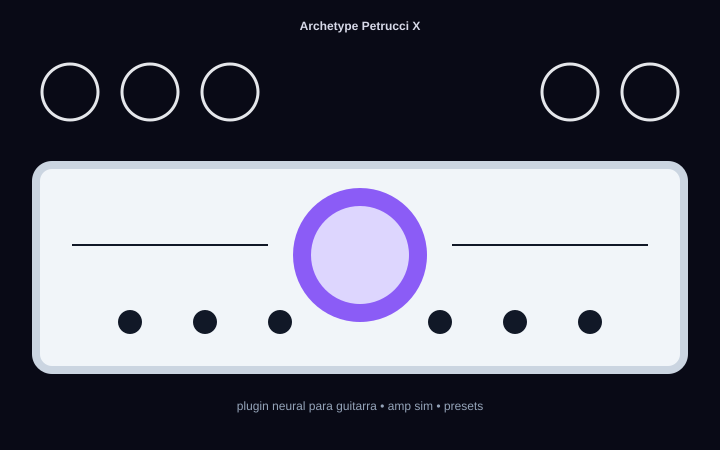
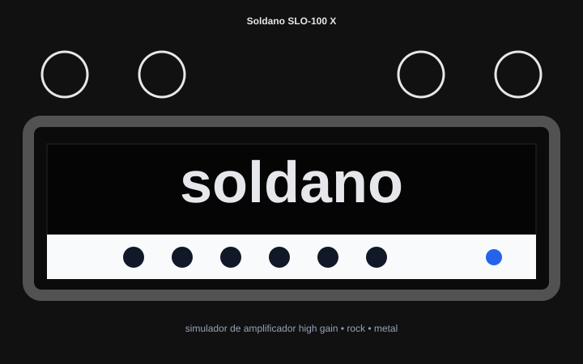
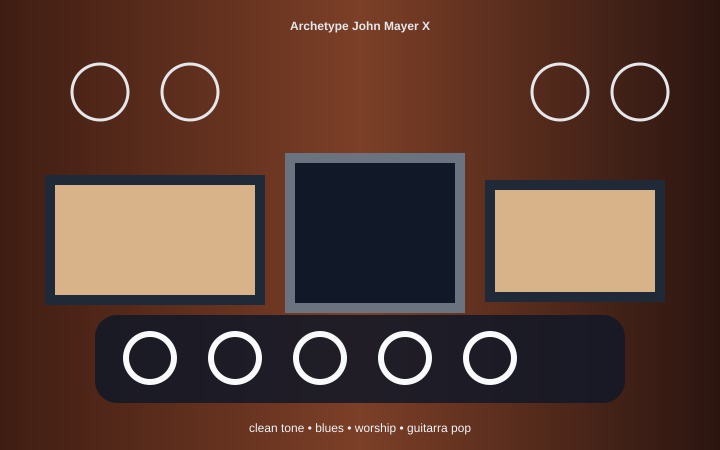

Neural Amp Pack
Simulador de amplificador para guitarra, metal, rock, worship, blues e timbres high gain com baixa latência.
R$ 97Plugins neurais, VST e timbres profissionais
Site leve para vender plugins de áudio, packs para guitarra, baixo, mixagem, masterização, impulse response, VST3, AU e presets com cadastro de nome/e-mail antes do checkout.

Catálogo SEO
Conteúdo otimizado com termos relacionados a Neural DSP, plugin de guitarra, VST, amp sim, simulador de amplificador, presets, IR, tone pack, home studio e produção musical.
Simulador de amplificador para guitarra, metal, rock, worship, blues e timbres high gain com baixa latência.
R$ 97Pacote inspirado em timbres modernos de guitarra, plugins Neural DSP, cab simulator, impulse response e presets prontos.
R$ 147Saturação, cola, loudness, masterização e finalização musical para produtores independentes e home studio.
R$ 197Imagens do produto



Segurança e conformidade
Para máxima segurança prática, o site envia o pagamento para provedor especializado como Stripe, Mercado Pago, PayPal ou Hotmart. Dados de cartão não passam por este site. Use domínio com HTTPS, política de privacidade, termos, suporte e informações reais do produto.
Dúvidas
Após confirmação do pagamento, configure seu provedor para enviar automaticamente o link de download por e-mail.
Informe aqui os formatos reais do seu produto, como VST3, AU ou AAX, e sistemas compatíveis.
Não existe garantia honesta de primeiro lugar. A página usa boas práticas de SEO técnico, conteúdo relevante, velocidade, títulos, metadados e palavras relacionadas.